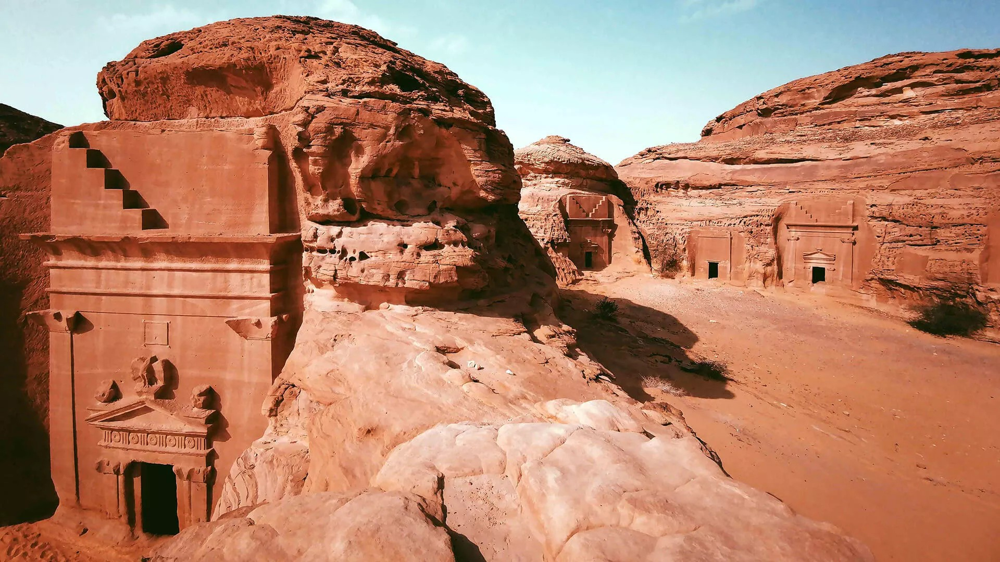

Al-Hijr (Mada'in Salih) – First Saudi UNESCO Site
Al-Hijr, also known as Mada'in Salih, is the first Saudi site to be inscribed on the UNESCO World Heritage List. It is a major archaeological treasure with historical significance spanning thousands of years.
The site contains over 110 carved Nabataean tombs, created for elite individuals such as rulers, military leaders, and notable community figures.
Inscriptions engraved on tomb façades reveal valuable information about ancient Nabataean society, including names, professions, and burial regulations.